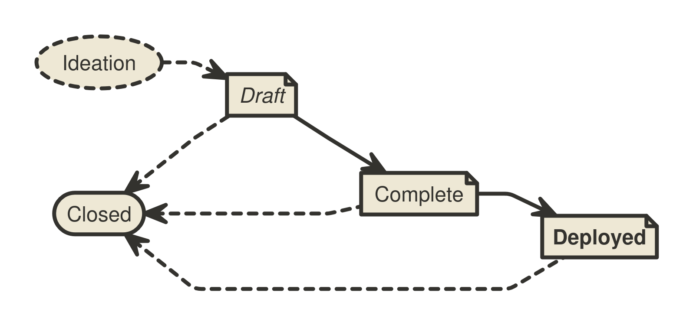

BIP 3
Abstract
This Bitcoin Improvement Proposal (BIP) provides information about the preparation of BIPs and policies relating to the publication of BIPs. It replaces BIP 2 with a streamlined process, and may be amended to address the evolving needs of the BIP process.
Motivation
BIP 2 was written in 2016. This BIP revisits aspects of the BIP 2 process that did not achieve broad adoption, reduces the judgment calls assigned to the BIP Editor role, delineates the BIP types more clearly, and generalizes the BIP process to fit the community’s use of the repository.
Fundamentals
What is a BIP?
BIPs are improvement proposals for Bitcoin. The main topic is information and technologies that support and expand the utility of the Bitcoin currency. Most BIPs provide a concise, self-contained, technical description of one new concept, feature, or standard. Some BIPs describe processes, implementation guidelines, best practices, incident reports (e.g., BIP 50), or other information relevant to the Bitcoin community. However, any topics related to the Bitcoin protocol, peer-to-peer network, and client software may be acceptable.
BIPs are intended to be a means for proposing new protocol features, coordinating client standards, and documenting design decisions that have gone into implementations. BIPs may be submitted by anyone, provided the content is of high quality, e.g., does not waste the community’s time.
The scope of the BIPs repository is limited to BIPs that do not oppose the fundamental principle that Bitcoin constitutes a peer-to-peer electronic cash system for the Bitcoin currency.
BIP Ownership
Each BIP is primarily owned by its authors and represents the authors’ opinion or recommendation. The authors are expected to foster discussion, address feedback and dissenting opinions, and, if applicable, advance the adoption of their proposal within the Bitcoin community. As a BIP progresses through the workflow, it becomes increasingly co-owned by the Bitcoin community.
Authors and Deputies
Authors may want additional help with the BIP process after writing an initial draft. In that case, they may assign one or more Deputies to their BIP. Deputies are stand-in owners of a BIP who were not involved in writing the document. They support the authors in advancing the proposal, or act as a point of contact for the BIP in the absence of the authors. Deputies may perform the role of Authors for any aspect of the BIP process unless overruled by an Author. Deputies share ownership of the BIP at the discretion of the Authors.
What is the Significance of BIPs?
BIPs do not define what Bitcoin is: individual BIPs do not represent Bitcoin community consensus or a general recommendation for implementation. A BIP represents a personal recommendation by the BIP authors to the Bitcoin community. Some BIPs may never be adopted. Some BIPs may be adopted by one or more Bitcoin clients or other related software. Some may even end up changing the consensus rules that the Bitcoin ecosystem jointly enforces.
What is the Purpose of the BIPs Repository?
The BIPs repository serves as a publication medium and archive for mature proposals. Through its high visibility, it facilitates the community-wide consideration of BIPs and provides a well-established source to retrieve the latest version of any BIP. The repository transparently records all changes to each BIP and allows any community member to retain a complete copy of the archive easily.
The BIPs repository neither tracks community sentiment1 nor ecosystem adoption2 of BIPs beyond the brief overview provided via the BIP status (see Workflow below). Proposals are published in this repository if they are on-topic and fulfill the editorial criteria. No formal or informal decision body governs Bitcoin development or decides adoption of BIPs.
BIP Format and Structure
Specification
Authors may choose to submit BIPs in MediaWiki or Markdown3 format.
Each BIP must have a Preamble, an Abstract, a Copyright, and a Motivation section. Authors should consider all issues in the following list and address each as appropriate.
- Preamble — Headers containing metadata about the BIP (see the section BIP Header Preamble below).
- Abstract — A short description of the issue being addressed.
- Motivation — Why is this BIP being written? Clearly explain how the existing situation presents a problem and why the proposed idea resolves the issue or improves upon the current situation.
- Specification — The technical specification should describe the syntax and semantics of any new feature. The specification should be detailed enough to enable any Bitcoin project to create an interoperable implementation.
- Rationale — The rationale fleshes out the specification by describing what inspired the design and why particular design decisions were made. It should describe related work and alternate designs that were considered. The rationale should record relevant objections or important concerns that were raised and addressed as this proposal was developed.
- Backward Compatibility — Any BIP that introduces incompatibilities must include a section describing these incompatibilities and their severity as well as provide instructions on how implementers and users should deal with these incompatibilities.
- Reference Implementation — Where applicable, a reference implementation, test vectors, and documentation must be finished before the BIP can be given the status “Complete”. Test vectors must be provided in the BIP or as auxiliary files (see Auxiliary Files) under an acceptable license. The reference implementation can be provided in the BIP, as an auxiliary file, or per linking another code reference that is expected to remain available permanently such as a pull request, a dedicated branch, a new repository, or similar.
- Changelog — A section to track modifications to a BIP after reaching Complete status.
- Copyright — The BIP must be placed under an acceptable license (see BIP Licensing below).
BIP Header Preamble
Each BIP must begin with an RFC 822-style header preamble. The headers must appear in the following order. Headers marked with “*” are optional. All other headers are required.
Overview
BIP: <BIP number, or "?" before assignment>
* Layer: <Consensus (soft fork) | Consensus (hard fork) | Peer Services | API/RPC | Applications>
Title: <BIP title (≤ 50 characters)>
Authors: <Authors’ names and email addresses>
* Deputies: <Deputies’ names and email addresses>
Status: <Draft | Complete | Deployed | Closed>
Type: <Specification | Informational | Process>
Assigned: <Date of number assignment (yyyy-mm-dd), or "?" before assignment>
License: <SPDX License Expression>
* Discussion: <Noteworthy discussion threads in "yyyy-mm-dd: URL" format>
* Version: <MAJOR.MINOR.PATCH>
* Requires: <BIP number(s)>
* Replaces: <BIP number(s)>
* Proposed-Replacement: <BIP number(s)>Header Descriptions
BIP — The assigned number of the BIP (without leading zeros). Please use “?” before a number has been assigned by the BIP Editors.
Layer — The layer of Bitcoin the BIP applies to using the BIP classification defined in BIP 123.
Authors — The names (or pseudonyms) and email addresses of all authors of the BIP. The format of each authors header value must be
Random J. User <address@dom.ain>Multiple authors are recorded on separate lines:
Authors: Random J. User <address@dom.ain> Anata Sample <anata@domain.example>Deputies — Additional owners of the BIP that are not authors. The Deputies header uses the same format as the Authors header. See the BIP Ownership section above.
Status — The stage of the workflow of the proposal. See the Workflow section below.
Type — See the BIP Types section below for a description of the three BIP types.
Assigned – The date a BIP was assigned its number. Please use “?” before a number has been assigned by the BIP Editors.
License — The License header specifies SPDX License Expressions describing the terms under which the BIP and its auxiliary files are available. See the BIP Licensing section below.
Discussion — The Discussion header points the audience to relevant discussions of the BIP, e.g., the mailing list thread in which the idea for the BIP was discussed, a thread where a new version of the BIP was presented, or relevant discussion threads on other platforms. Entries take the format “yyyy-mm-dd: URL”, e.g.,
2009-01-09: https://www.mail-archive.com/cryptography@metzdowd.com/msg10142.html, using the date and URL of the start of the conversation. Multiple discussions should be listed on separate lines.Version — The current version number of this BIP. See the Changelog section below.
Requires — A list of existing BIPs the new proposal depends on. If multiple BIPs are required, they should be listed in one line separated by a comma and space (e.g., “1, 2”).
Replaces4 — BIP authors may put the numbers of one or more prior BIPs in the Replaces header to recommend that their BIP succeeds, supersedes, or renders obsolete those prior BIPs.
Proposed-Replacement5 — When a later BIP indicates that it intends to supersede an existing BIP, the later BIP’s number is added to the Proposed-Replacement header of the existing BIP to indicate the potential successor BIP.
Auxiliary Files
BIPs may include auxiliary files such as diagrams and source
code. Auxiliary files must be included in a subdirectory for that
BIP named bip-XXXX, where “XXXX” is the BIP number
zero-padded to four digits. File names in the subdirectory do not
need to adhere to a specific convention.
BIP Types
- A Specification BIP defines a set of technical rules describing a new feature or affecting the interoperability of implementations. The distinguishing characteristic of a Specification BIP is that it can be implemented, and implementations can be compliant with it. Specification BIPs must have a Specification section, must have a Backward Compatibility section (if incompatibilities are introduced), and can only be advanced to Complete after they contain or refer to a reference implementation and test vectors.
- An Informational BIP describes a Bitcoin design issue, or provides general guidelines or other information to the Bitcoin community.
- A Process BIP describes a process surrounding Bitcoin, or proposes a change to (or an event in) a process. Process BIPs are like Specification BIPs, but apply to topics other than the Bitcoin protocol and Bitcoin implementations. They often require community consensus and are typically binding for the corresponding process. Examples include procedures, guidelines, and changes to decision-making processes such as the BIP process.
Workflow
The BIP process starts with a new idea for Bitcoin. Each potential BIP must have authors—people who write the BIP, gather feedback, shepherd the discussion in the appropriate forums, and finally recommend a mature proposal to the community.

Ideation
After having an idea, the authors should evaluate whether it meets the criteria to become a BIP, as described in this BIP. The idea must be of interest to the broader community or relevant to multiple software projects. Minor improvements and matters concerning only a single project usually do not require standardization and should instead be brought up directly to the relevant project.
The authors should first research whether their idea has been considered before. Ideas in Bitcoin are often rediscovered, and prior related discussions may inform the authors of the issues that may arise in its progression. After some investigation, the novelty and viability of the idea should be tested by posting a new, dedicated thread about the idea to the Bitcoin Development Mailing List. Prior correspondence can be found in the mailing list archive.
It is recommended that authors establish before or at the start of working on a draft whether their idea may be of interest to the Bitcoin community. Authors should avoid opening a pull request with a BIP draft out of the blue. Vetting an idea publicly before investing time and effort to formally describe the idea is meant to save time for both the authors and the community. Not only may someone point out relevant discussion topics that were missed in the authors’ research, or that an idea is guaranteed to be rejected based on prior discussions, but describing an idea publicly also tests whether it is of interest to more people beside the authors.
As a first sketch of the proposal is taking shape, the authors should present it to the Bitcoin Development Mailing List. This gives the authors a chance to collect initial feedback and address fundamental concerns. If the authors wish to work in public on the proposal at this stage, it is recommended that they open a pull request against one of their forks of the BIPs repository instead of the main BIPs repository.
It is recommended that complicated proposals be split into separate BIPs that each focus on a specific component of the overall proposal.
Progression through BIP Statuses
The following sections refer to BIP Status field values. The BIP Status field is defined in the Header Preamble specification above.
Draft
After fleshing out the proposal further and ensuring that it is of high quality and properly formatted, the authors should open a pull request to the BIPs repository. The document must adhere to the formatting requirements specified above and should be provided as a file named with a working title of the form “bip-title.[md|mediawiki]”. Only BIP Editors may assign BIP numbers. Until one has done so, authors should refer to their BIP by name only.
BIPs that (1) adhere to the formatting requirements, (2) are on-topic, and (3) have materially progressed beyond the ideation phase, e.g., by generating substantial public discussion and commentary from diverse contributors, by independent Bitcoin projects working on adopting the proposal, or by the authors working for an extended period toward improving the proposal based on community feedback, will be assigned a number by a BIP Editor. A number may be considered assigned only after it has been publicly announced in the pull request by a BIP Editor. The BIP Editors should not assign a number when they perceive a proposal being met with lack of interest: number assignment facilitates the distributed discussion of ideas, but before a proposal garners some interest in the Bitcoin community, there is no need to refer to it by a number.
Proposals are also not ready for number assignment if they duplicate efforts, disregard formatting rules, are too unfocused or too broad, fail to provide proper motivation, fail to address backward compatibility where necessary, or fail to specify the feature clearly and comprehensively. Reviewers and BIP Editors should provide guidance on how the proposal may be improved to progress toward readiness. Pull requests that are proposing off-topic ideas or have stopped making progress may be closed.
When the proposal is ready and has been assigned a number, a BIP Editor will merge it into the BIPs repository. After the BIP has been merged to the repository, its main focus should no longer shift significantly, even while the authors may continue to update the proposal as necessary. Updates to merged documents by the authors should also be submitted as pull requests.
Complete6
When the authors have concluded all planned work on their proposal, are confident that their BIP represents a net improvement, is clear, comprehensive, and is ready for adoption by the Bitcoin community, they may update the BIP’s status to Complete to indicate that they recommend adoption, implementation, or deployment of the BIP. Where applicable, the authors must ensure that any proposed specification is solid, not unduly complicated, and definitive. Specification BIPs must come with or refer to a working reference implementation and comprehensive test vectors before they can be moved to Complete. Subsequently, the BIP’s content should only be adjusted in minor details, e.g., to improve language, clarify ambiguities, backfill omissions in the specification, add test vectors for edge cases, or address other issues discovered as the BIP is being adopted.
A Complete BIP can only move to Deployed or Closed. Any necessary changes to the specification should be minimal and interfere as little as possible with ongoing adoption. If a Complete BIP is found to need substantial functional changes, it may be preferable to move it to Closed7, and to start a new BIP with the changes instead. Otherwise, it could cause confusion as to what being compliant with the BIP means.
A BIP may remain in the Complete status indefinitely unless its authors or deputies decide to move it to Closed or it is advanced to Deployed. Complete is the final status for most successful Informational BIPs.
Deployed
A Complete BIP should only be moved to Deployed once it is settled: after its approach has solidified, its Specification has been put through its paces, feedback from early adopters has been processed, and amendments to the BIP have stopped. Then, a BIP may be advanced to Deployed upon request by any community member with evidence8 that the BIP is in active use. Convincing evidence includes for example: an established project having deployed support for the BIP in mainnet software releases, a soft fork proposal’s activation criteria having been met on the network, or rough consensus for the BIP having been demonstrated.
Once Deployed, the BIP is considered final. Any modifications to the BIP beyond bug fixes, other minor amendments, additions to the test vectors, or editorial changes should be avoided. Any breaking changes to the BIP’s Specification should be proposed as a new separate BIP.9
Process BIPs
A Process BIP may change status from Complete to Deployed when it achieves rough consensus on the Bitcoin Development Mailing List. A proposal is said to have rough consensus if its advancement has been open to discussion on the mailing list for at least one month, the discussion achieved meaningful engagement, and no person maintains any unaddressed substantiated objections to it. Addressed or obstructive objections may be ignored/overruled by general agreement that they have been sufficiently addressed, but clear reasoning must be given in such circumstances. Deployed Process BIPs may be modified indefinitely as long as a proposed modification has rough consensus per the same criteria.10
Closed11
A BIP that is of historical interest only, and is not being actively worked on, promoted or in active use, should be marked as Closed. The reason for moving the proposal to (or from) Closed should be recorded in the Changelog section in the same commit that updates the status. BIPs do not get deleted, they are retained even after being updated to Closed. Transitions involving the Closed state are:
Draft ↦ Closed
BIP authors may decide on their own to change their BIP’s status from Draft to Closed. If a Draft BIP stops making progress, sees accumulated feedback unaddressed, or otherwise appears stalled for a year, anyone may propose the BIP status be updated to Closed. The BIP is then updated to Closed unless the authors assert that they intend to continue work within four weeks of being contacted.
Complete ↦ Closed
BIPs that had attained the Complete status, i.e., that had been recommended for adoption, may be moved to Closed per the authors’ announcement to the Bitcoin Development Mailing List12. However, if someone volunteers to adopt the proposal within four weeks, they become the BIP’s author or deputy (see Transferring BIP Ownership below), and the BIP will remain Complete instead.
Deployed ↦ Closed
A BIP may evolve from Deployed to Closed when it is no longer in active use. Any community member may initiate this Status update by announcing it to the mailing list13, and proceed if no objections have been raised for four weeks.
Closed ↦ Draft
The Closed status is generally intended to be a final status for BIPs, and if BIP authors decide to make another attempt at a previously Closed BIP, it is generally recommended to create a new proposal. (Obviously, the authors may borrow any amount of inspiration or actual text from any prior BIPs as licensing permits.) The authors should take special care to address the issues that caused the prior attempt’s abandonment. Even if the prior attempt had been assigned a number, the new BIP will generally be assigned a distinct number. However, if it is obvious that the new attempt directly continues work on the same idea, it may be reasonable to return the Closed BIP to Draft status.
Changelog Section and Version Header
To help implementers understand updates to a BIP, any changes after it has reached Complete must be tracked with version, date, and description in a Changelog section sorted by most recent version first. The version number is inspired by semantic versioning (MAJOR.MINOR.PATCH). The MAJOR version is incremented if changes to the BIP’s Specification are introduced that are incompatible with prior versions (which should be rare after a BIP is Complete, and only happen in well-grounded exceptional cases to a BIP that is Deployed). The MINOR version is incremented whenever the specification of the BIP is changed or extended in a backward-compatible way. The PATCH version is incremented for other changes to the BIP that are noteworthy (bug fixes, test vectors, important clarifications, etc.). Version 1.0.0 is used to label the promotion to Complete. A Changelog section may be introduced during the Draft phase to record significant changes (using versions 0.x.y).
Example:
Changelog
- 2.0.0 (2025-01-22):
- Introduce a breaking change in the specification to fix a bug.
- 1.1.0 (2025-01-17):
- Add a backward compatible extension to the BIP.
- 1.0.1 (2025-01-15):
- Clarify an edge case and add corresponding test vectors.
- 1.0.0 (2025-01-14):
- Complete planned work on the BIP.
After a BIP receives a Changelog, the Preamble must indicate the latest version in the Version header. The Changelog highlights revisions to BIPs to human readers. A single BIP shall not recommend more than one variant of an idea at the same time. A different or competing variant of an existing BIP must be published as a separate BIP.
Adoption of Proposals
The BIPs repository does not track the sentiment on proposals and does not track the adoption of BIPs beyond whether they are in active use or not. It is not intended for BIPs to list additional implementations beyond the reference implementation: the BIPs repository is not a signpost where to find implementations.14 After a BIP is advanced to Complete, it is up to the Bitcoin community to evaluate, adopt, ignore, or reject a BIP. Individual Bitcoin projects are encouraged to publish a list of BIPs they implement. A good example of this at the time of writing this BIP can be observed in Bitcoin Core’s doc/bips.md file.
Transferring BIP Ownership
It occasionally becomes necessary to transfer ownership of BIPs to new owners. In general, it would be preferable to retain the original authors of the transferred BIP, but that is up to the original authors. A good reason to transfer ownership is because the original authors no longer have the time or interest in updating it or following through with the BIP process, or are unreachable or unresponsive. A bad reason to transfer ownership is because someone doesn’t agree with the direction of the BIP. The community tries to build consensus around a BIP, but if that’s not possible, rather than fighting over control, the dissenters should supply a competing BIP.
If someone is interested in assuming ownership of a BIP, they should send an email asking to take over, addressed to the original authors, the BIP Editors, and the Bitcoin Development Mailing List15. If the authors are unreachable or do not respond in a timely manner (e.g., four weeks), the BIP Editors will make a unilateral decision whether to appoint the applicants as Authors or Deputies (which may be amended should the original authors make a delayed reappearance).
BIP Licensing
The Bitcoin project develops a global peer-to-peer digital cash system. Open standards are indispensable for continued interoperability. Open standards reduce friction, and encourage anybody and everyone to contribute, compete, and innovate on a level playing field. Only freely licensed contributions are accepted to the BIPs repository.
Specification
Each new BIP must specify in two ways under which license terms it is made available. First, it must specify an SPDX License Expression in the License field in the preamble. Second, it must include a matching Copyright section, possibly providing further details on licensing.
For example, a preamble might include the following License header:
License: CC0-1.0 OR MITIn this case, the BIP (including all auxiliary files) is made available under the terms of both CC0 1.0 Universal as well as the MIT License, and anyone may modify and redistribute it provided they comply with the terms of either license, at their option. In other words, the license list is an “OR choice”, not an “AND also” requirement. See the SPDX documentation and the SPDX License List for further details.
Wherever different from those specified in the License header,
an auxiliary file or directory should specify the license terms
under which it is made available as is common in software (e.g.,
with a SPDX-License-Identifier: <SPDX License Expression>
comment, a license header, or a LICENSE/COPYING file). Such
exceptions should also be mentioned in the Copyright section. It
is recommended to make any test vectors available under CC0-1.0 or
FSFAP in addition to any other licenses to allow anyone to copy
test vectors into their implementations without introducing
license hindrances.
A few BIP2-era BIPs (98, 116, 117, 330, 340) have a no longer used “License-Code” header indicating the license terms applicable to auxiliary source code files. For such cases, please refer to BIP2.
It is recommended that source code included in a BIP (whether within the text or in auxiliary files) be licensed under the same license terms as the project it is proposed to modify, if any. For example, changes intended for Bitcoin Core would ideally be licensed (also) under the MIT License.
In all cases, details of the licensing terms must be provided in the Copyright section of the BIP.
Acceptable Licenses16
Each new BIP must be made available under at least one acceptable license as listed below. BIPs are not required to be exclusively licensed under approved terms, and may also be licensed under other licenses in addition to at least one acceptable license.
In other words, a new BIP must specify an SPDX License Expression that is either “L” or equivalent to “L OR E” for some acceptable license L from the following list and another SPDX License Expression E.
- BSD-2-Clause: BSD 2-Clause License
- BSD-3-Clause: BSD 3-Clause License
- CC0-1.0: CC0 1.0 Universal
- FSFAP: FSF All Permissive License
- CC-BY-4.0: Creative Commons Attribution 4.0 International
- MIT: The MIT License
- MIT-0: MIT No Attribution License
- Apache-2.0: Apache License 2.0
- BSL-1.0: Boost Software License 1.0
Not Acceptable Licenses
All licenses not explicitly included in the above lists are not acceptable terms for a Bitcoin Improvement Proposal. However, BIPs predating this proposal were accepted under other terms, and should use one of the following identifiers.
- LicenseRef-PD: Placed into the public domain
- OPUBL-1.0: Open Publication License 1.0
BIP Editors
The current BIP Editors are:
- Bryan Bishop (kanzure@gmail.com)
- Jon Atack (jon@atack.com)
- Mark “Murch” Erhardt (murch@murch.one)
- Olaoluwa Osuntokun (laolu32@gmail.com)
- Ruben Somsen (rsomsen@gmail.com)
BIP Editor Responsibilities and Workflow
The BIP Editors subscribe to the Bitcoin Development Mailing List and watch the BIPs repository.
When either a new BIP idea or an early draft is submitted to the mailing list, BIP Editors or other community members should comment in regard to:
- Novelty of the idea
- Viability, utility, and relevance of the concept
- Readiness of the proposal
- On-topic for the Bitcoin community
Discussion in pull request comments can often be hard to follow as feedback gets marked as resolved when it is addressed by authors. Substantive discussion of ideas may be more accessible to a broader audience on the mailing list, where it is also more likely to be retained by the community memory.
If the BIP needs more work, an editor should ensure that constructive, actionable feedback is provided to the authors for revision. Once the BIP is ready it should be submitted as a “pull request” to the BIPs repository where it may get further feedback.
For each new BIP pull request that comes in, an editor checks the following:
- The idea has been previously proposed to the Bitcoin Development Mailing List and discussed there
- The described idea is on-topic for the repository
- A draft of the BIP by one of the authors has been previously discussed on the Bitcoin Development Mailing List
- Title accurately describes the content
- Proposal is of general interest and/or pertains to more than one Bitcoin project/implementation
- Document is properly formatted
- Licensing terms are acceptable
- Motivation, Rationale, and Backward Compatibility have been addressed
- Specification provides sufficient detail for implementation
- The defined Layer and Type headers must be correctly assigned for the given specification
- The BIP is ready: it is comprehensible, technically feasible and sound, and all aspects are addressed as necessary
Editors do NOT evaluate whether the proposal is likely to be adopted.
Then, a BIP Editor will:
- Assign a BIP number in the pull request
- Ensure that the BIP is listed in the README
- Merge the pull request when it is ready
The BIP Editors are intended to fulfill administrative and editorial responsibilities. The BIP Editors monitor BIP changes, and update BIP headers as appropriate.
BIP Editors may also, at their option, unilaterally make and merge strictly editorial changes to BIPs, such as correcting misspellings, mending grammar mistakes, fixing broken links, etc. as long as they do not change the meaning or conflict with the original intent of the authors. Such a change must be recorded in the Changelog if it’s noteworthy per the criteria mentioned in the Changelog section.
Backward Compatibility
Changes from BIP 2
Workflow
- Status field values are reduced from nine to four:
- Deferred, Obsolete, Rejected, Replaced, and Withdrawn are gathered up into Closed.17
- Final and Active are collapsed into Deployed.
- Proposed is renamed to Complete.
- The remaining statuses are Draft, Complete, Deployed, and Closed.
- The comment system is abolished.18
- A BIP in Draft or Complete status may no longer be closed
solely on grounds of not making progress for three years.19
- A BIP in Draft status may be updated to Closed status if it appears to have stopped making progress for at least a year and its authors do not assert within four weeks of being contacted that they intend to continue working on it.
- Complete BIPs can only be moved to Closed by its authors and may remain in Complete indefinitely.
- A Changelog section is introduced to track significant changes to BIPs after they have reached the Complete status.
- Process BIPs are living documents that do not ossify and may be modified indefinitely.
- Some judgment calls previously required from BIP Editors are reassigned either to the BIP authors or the repository’s audience.
BIP Format
- The Standards Track type is superseded by the similar Specification type.20
- Many sections are declared optional; it is up to the authors and reviewers to judge whether all relevant topics have been comprehensively addressed and which topics require a designated section to do so.
- “Other Implementations” sections are discouraged.21
- Auxiliary files are only permitted in the corresponding BIP’s subdirectory, as no one used the alternative of labeling them with the BIP number.
- Tracking of community consensus and adoption is out of scope for the BIPs repository, except to determine whether a BIP is in active use for the move into or out of the Deployed status.
- The distinction between recommended and acceptable licenses was dropped.
- Most licenses that have not been used in the BIP process have been dropped from the list of acceptable licenses.
Preamble
- “Comments-URI” and “Comments-Summary” headers are dropped from the preamble.22
- The “Superseded-By” header is replaced with the “Proposed-Replacement” header.
- The “Post-History” header is replaced with the “Discussion” header.
- The optional “Version” header is introduced.
- The “Discussions-To” header is dropped, as it has never been used in any BIP.
- The “License-Code” header has been sunset, as it was used by only five BIPs (98, 116, 117, 330, 340) and created more ambiguity than clarity.
- The “Created” header is renamed to “Assigned”, as the header’s value is the date of number assignment.23
- Introduce Deputies and optional “Deputies” header.
- The BIP “Title” header may now contain up to 50 characters (increased from 44 in BIP 2).
- The “Layer” header is optional for Specification BIPs or Informational BIPs, as it does not make sense for all BIPs.24
- Rename the “Author” field to “Authors”.
Updates to Existing BIPs should this BIP be Activated
Previous BIP Process
This BIP replaces BIP 2 as the guideline for the BIP process.
BIP Types
Standards Track BIPs and eligible Informational BIPs are assigned the Specification type. The Standards Track type is considered obsolete. Specification BIPs use the Layer header rules specified in BIP 123.
Comments
The Comments-URI and Comments-Summary headers should be removed from all BIPs whose comment page in the wiki is empty. For existing BIPs whose comment page has content, BIP Authors may keep both headers or remove both headers at their discretion. It is recommended that existing wiki pages are not modified due to the activation of this BIP.
Status Field
After the activation of this BIP, the Status fields of existing BIPs that do not fit the specification in this BIP are updated to the corresponding values prescribed in this BIP. BIPs that have had Draft status for extended periods will be moved to Complete or Deployed as applicable in collaboration with their authors. The authors of incomplete Draft BIPs will be contacted to learn whether the BIPs are still in progress toward Complete, and will otherwise be updated to Closed as described in the Workflow section above.
Authors Header
The Author header is replaced with the Authors header in all BIPs.
Discussion Header
The Post-History header is replaced with the Discussion header in all BIPs.
Proposed-Replacement Header
The Superseded-By header is replaced with the Proposed-Replacement header in all BIPs.
Licenses
Existing BIPs retain their license terms unchanged. The License and License-Code headers of BIPs are updated to express those terms using SPDX License Expressions.
Changelog
- 1.4.0 (2025-12-09):
- Revert AI guidance, add Changelog section, broaden reference implementation formats, move Type header responsibility to authors, other editorial changes
- 1.3.1 (2025-11-10):
- Reiterate that numbers are assigned by BIP Editors in pull requests
- 1.3.0 (2025-10-22):
- Restrict use of AI/LLM tools, require original work.
- 1.2.1 (2025-09-19):
- Clarify that idea should be discussed on dedicated mailing list thread
- 1.2.0 (2025-09-19):
- Rename Created header to Assigned to clarify that it holds the date of number assignment
- 1.1.0 (2025-07-18):
- Switch to SPDX License Expressions, drop License-Code header, and make editorial changes to BIP Licensing section.
- 1.0.1 (2025-06-27):
- Improve description of acceptance, purpose of the BIPs repository, when Draft BIPs can be closed due to not making progress, and make other minor improvements to phrasing.
- 1.0.0 (2025-03-18):
- Complete planned work and move to Proposed.
Copyright
This BIP is licensed under the BSD-2-Clause License. Some content was adapted from BIP 2 which was also licensed under the BSD-2-Clause.
Related Work
- BIP 1: BIP Purpose and Guidelines
- BIP 2: BIP Process, revised
- BIP 123: BIP Classification
- RFC 822: Standard for ARPA Internet Text Messages
- RFC 2223: Instructions to RFC Authors
- RFC 7282: On Consensus and Humming in the IETF
Acknowledgements
We thank AJ Towns, Jon Atack, Jonas Nick, Larry Ruane, Pieter Wuille, Tim Ruffing, and others for their review, feedback, and helpful comments.
Rationale
BIP: 123
Title: BIP Classification
Authors: Eric Lombrozo <elombrozo@gmail.com>
Status: Deployed
Type: Process
Assigned: 2015-08-26
License: CC0-1.0 OR FSFAPWhen is a BIP “accepted”?
Many standards processes such as the PEPs or the IETF have a mechanism for a proposal to be formally accepted by some council or committee. The BIP Process does not have such a decision body. Bitcoin development and “acceptance” of BIPs emerges from the participation of stakeholders across the ecosystem, and refers to some vague notion of community interest and support for a proposal.
BIP 2 had made an attempt to gather community feedback into comment summaries in BIPs directly. Given the low participation and corresponding low information quality of the summaries that resulted from that feature, this BIP instead intends to leave the evaluation of BIPs to the reviewers and users.↩︎Why does the BIPs repository no longer track adoption?
In the past, some BIPs maintained lists of projects that had implemented the BIP. These lists generated noise for subscribers of the repository, often listed implementations of questionable quality, and quickly grew outdated, therefore providing little value. The repository no longer tracks which projects have implemented BIPs. Instead, it is recommended that projects publish a list of the BIPs they implement.↩︎Which flavor of Markdown is allowed?
The author of this proposal has no opinion on Markdown flavors, but recommends that proposals stick to the basic Markdown syntax features commonly shared across Markdown dialects.↩︎Why was “Replaces” retained instead of changing it to “Proposes-to-Replace”?
When one BIP proposes to supersede another, it is on the original BIP where things get complicated. The BIP is an author document, but depending on its progress through the workflow, it may meanwhile be co-owned by the community. Who may decide whether the original document should endorse a potential replacement BIP? Is it the original authors, the authors of the new proposal, the BIP Editors, some sort of community process, or a mix of all of the above?
On the new BIP these problems don’t exist in the same manner. As it is freshly written, it is wholly owned by its authors. The community is not yet invested and the original BIP’s authors do not have a privileged role in determining the content of the new BIP. The authors of the new BIP can unilaterally recommend that it be considered a replacement for a prior BIP. From there, the community can evaluate the proposal and adopt or reject it, thus establishing whether it is successful in superseding the original or not.↩︎Why is Superseded-By replaced with Proposed-Replacement?
Reviewers asked who should get to decide whether a BIP is superseded in case of a disagreement among the authors of the original BIP, the authors of the new BIP, the editors, or the community? This is addressed by making the “Replaces” header part of the recommendation of the authors of the new document, and replacing the “Superseded-By” header with the “Proposed-Replacement” header that lists any proposals that recommend replacing the original document.↩︎Why was the Proposed status renamed to Complete?
Some reviewers of this BIP raised that in a process which outlines the workflow of Bitcoin Improvement Proposals using “Proposed” as a status field value was overloading the term: clearly proposals are proposed at all stages of the process. “Complete” expresses that the authors have concluded planned work on all parts of the proposal and are ready to recommend their BIP for adoption. The term “ready” was also considered, but considered too subjective.↩︎Why should the specification of an implemented BIP no longer be changed?
After a Complete or Deployed BIP has been deployed by one or more implementations, breaking changes to the specification could lead to a situation where multiple “compliant” implementations fail at being interoperable, because they implemented different versions of the same BIP. Therefore, even changes to the specification of Complete BIPs should be avoided, but Deployed BIPs should never be subject to breaking changes to their specification.↩︎How is evidence for advancing to Deployed evaluated?
Whether evidence is deemed convincing to move a BIP to Deployed is up to the BIP Editors and Bitcoin community. Running a single instance of a personal fork of a software project might be rejected, while a small software project with dozens of users may be sufficient. The main point of the Deployed status is to indicate that changes to the BIP could negatively impact users of projects that have already implemented support.↩︎Why should the specification of an implemented BIP no longer be changed?
After a Complete or Deployed BIP has been deployed by one or more implementations, breaking changes to the specification could lead to a situation where multiple “compliant” implementations fail at being interoperable, because they implemented different versions of the same BIP. Therefore, even changes to the specification of Complete BIPs should be avoided, but Deployed BIPs should never be subject to breaking changes to their specification.↩︎Why are Process BIPs living documents?
In the past years, the existing BIPs process has not always provided a clear approach to all situations. For example, the content of BIP 2 appears to have been penned especially with fork proposals in mind. It seems clear that Bitcoin development will evolve in many surprising ways in the future. Instead of mandating the effort of writing a new process document every time new situations arise, it seems preferable to allow the process to adapt to the concerns of the future in specific aspects. Therefore, Process BIPs are defined as living documents that remain open to amendment. If a Process BIP requires large modifications or even a complete overhaul, a new BIP should be preferred.↩︎Why was the Closed Status introduced?
The Closed Status provides value to the audience by indicating which documents are only of historical significance. Previously, the process had Deferred, Obsolete, Rejected, Replaced, and Withdrawn, which all meant some flavor of “work has stopped on this.” The many statuses complicated the process, may have contributed to process fatigue, and may have resulted in BIPs’ statuses not being maintained well. The author of this BIP feels that all of the aforementioned can be represented by Closed without significantly impacting the information quality of the overview table. Where the many Status variants provided minuscule additional information, the simplification is more valuable and the Changelog section now collects specific details.↩︎Why are some BIP status changes announced to the mailing list?
The BIPs repository does not and cannot track who might be interested in or has deployed a BIP. While concerns were raised that making announcements to the Bitcoin Developer Mailing List would introduce unnecessary noise, our rationale is that 1) moving Complete and Deployed BIPs to the Closed status will be a rare occurrence, 2) status updates will usually not generate a lot of discussion, 3) while the mailing list should preferably only used for getting review for new BIPs, it is the only channel available to us that can be considered a public announcement to the audience of the BIPs repository: even if the authors, implementers, or other parties interested in a BIP do not see the announcement themselves, they may be made aware by someone that does see it.↩︎Why are some BIP status changes announced to the mailing list?
The BIPs repository does not and cannot track who might be interested in or has deployed a BIP. While concerns were raised that making announcements to the Bitcoin Developer Mailing List would introduce unnecessary noise, our rationale is that 1) moving Complete and Deployed BIPs to the Closed status will be a rare occurrence, 2) status updates will usually not generate a lot of discussion, 3) while the mailing list should preferably only used for getting review for new BIPs, it is the only channel available to us that can be considered a public announcement to the audience of the BIPs repository: even if the authors, implementers, or other parties interested in a BIP do not see the announcement themselves, they may be made aware by someone that does see it.↩︎What is the issue with “Other Implementations” sections in BIPs?
In the past, some BIPs had “Other Implementations” sections that caused frequent change requests to existing BIPs. This put a burden on the BIP authors and BIP Editors, and frequently led to lingering pull requests due to the corresponding BIPs’ authors no longer participating in the process. Many of these alternative implementations eventually became unmaintained or were low-quality to begin with. Therefore, “Other Implementations” sections are heavily discouraged.↩︎Why are some BIP status changes announced to the mailing list?
The BIPs repository does not and cannot track who might be interested in or has deployed a BIP. While concerns were raised that making announcements to the Bitcoin Developer Mailing List would introduce unnecessary noise, our rationale is that 1) moving Complete and Deployed BIPs to the Closed status will be a rare occurrence, 2) status updates will usually not generate a lot of discussion, 3) while the mailing list should preferably only used for getting review for new BIPs, it is the only channel available to us that can be considered a public announcement to the audience of the BIPs repository: even if the authors, implementers, or other parties interested in a BIP do not see the announcement themselves, they may be made aware by someone that does see it.↩︎Why were some licenses dropped?
Among the 141 BIPs with licenses in the repository, only nine licenses have ever been used to license BIPs (although, some BIPs were made available under more than one license) and only one license has been used to license code:Licenses used:
- BSD-2-Clause: 55
- PD: 42
- CC0-1.0: 23
- BSD-3-Clause: 19
- OPUBL-1.0: 5
- CC-BY-SA-4.0: 4
- FSFAP: 3
- MIT: 2
- CC-BY-4.0: 1
License-Code used (previous BIP2 format):
- BSD-2-Clause: 1
- CC0-1.0: 1
- MIT: 5
The following previously acceptable licenses were retained per request of reviewers, even though they have so far never been used in the BIPs process:
- Apache-2.0: Apache License 2.0
- BSL-1.0: Boost Software License 1.0
The following previously acceptable licenses have never been used in the BIPs Process and have been dropped:
- AGPL-3.0+: GNU Affero General Public License (AGPL) 3
- FDL-1.3: GNU Free Documentation License 1.3
- GPL-2.0+: GNU General Public License (GPL) 2 or newer
- LGPL-2.1+: GNU Lesser General Public License (LGPL) 2.1 or newer
Why are software licenses included?
- Some BIPs, in particular those concerning the consensus layer, may include literal code in the BIP itself which may not be available under the license terms the authors wish to use for the BIP.
- The author of this BIP has been provided with a learned opinion indicating that software licenses are perfectly acceptable for licensing “human code” i.e., text as well as Markdown or MediaWiki code.
Why is CC-BY-SA-4.0 no longer acceptable for new BIPs?
- Specification BIPs are required to have a Reference Implementation and Test Vectors to be advanced to Complete. As the BIPs repository is aiming to make proposals easily adoptable, the intention is for the reference implementation and test vectors to be as accessible as possible. Copyleft licenses may introduce friction here, and therefore CC-BY-SA-4.0 (and the GPL-flavors) is no longer considered acceptable for new BIPs. As mentioned above, existing BIPs will retain their original licensing.
Why are Open Publication License and Public Domain no longer acceptable for new BIPs?
- Public domain is not universally recognised as a legitimate action, thus it is inadvisable.
- The Open Publication License is generally regarded as obsolete, and not a license suitable for new publications.
Why was the Closed Status introduced?
The Closed Status provides value to the audience by indicating which documents are only of historical significance. Previously, the process had Deferred, Obsolete, Rejected, Replaced, and Withdrawn, which all meant some flavor of “work has stopped on this.” The many statuses complicated the process, may have contributed to process fatigue, and may have resulted in BIPs’ statuses not being maintained well. The author of this BIP feels that all of the aforementioned can be represented by Closed without significantly impacting the information quality of the overview table. Where the many Status variants provided minuscule additional information, the simplification is more valuable and the Changelog section now collects specific details.↩︎Why were comments, Comments-URI, and Comments-Summary removed from the process?
The comments feature saw insignificant adoption. Few BIPs received any comments and barely any more than two with only a handful of contributors commenting at all. This led to many situations in which one or two comments ended up dominating the comment summary. While some of those comments may have been representative of broadly held opinions, it also overstated the importance of individual comments directly in the Preamble of BIPs. As collecting feedback in this accessible fashion failed, the new process puts the burden back on the audience to make their own evaluation.↩︎Why can proposals remain in Draft or Complete indefinitely?
The automatic 3-year timeout of BIPs has led to some disagreement in the past and seems unnecessary in cases where the authors remain active in the community and still consider their idea worth pursuing. On the other hand, Draft proposals that appear stale may be closed after only one year, which should achieve the main goal of the original rule by limiting the effort and attention spent on proposals that never reach Complete.↩︎Why was the Specification type introduced?
The definitions of Informational and Standards Track BIPs caused some confusion in the past. Due to Informational BIPs being described as optional, Standards Track BIPs were sometimes misunderstood to be generally recommended. This has led to a number of BIPs that propose new features affecting interoperability of implementations being assigned the Informational type. The situation is remedied by introducing a new Specification BIP type that is inclusive of any BIPs that can be implemented and affect interoperability of Bitcoin applications. Since all BIPs are individual recommendations by the authors (even if some may eventually achieve endorsement by the majority of the community), the prior reminder that Informational BIPs are optional is dropped.↩︎What is the issue with “Other Implementations” sections in BIPs?
In the past, some BIPs had “Other Implementations” sections that caused frequent change requests to existing BIPs. This put a burden on the BIP authors and BIP Editors, and frequently led to lingering pull requests due to the corresponding BIPs’ authors no longer participating in the process. Many of these alternative implementations eventually became unmaintained or were low-quality to begin with. Therefore, “Other Implementations” sections are heavily discouraged.↩︎Why were comments, Comments-URI, and Comments-Summary removed from the process?
The comments feature saw insignificant adoption. Few BIPs received any comments and barely any more than two with only a handful of contributors commenting at all. This led to many situations in which one or two comments ended up dominating the comment summary. While some of those comments may have been representative of broadly held opinions, it also overstated the importance of individual comments directly in the Preamble of BIPs. As collecting feedback in this accessible fashion failed, the new process puts the burden back on the audience to make their own evaluation.↩︎Why was the Created header renamed to Assigned?
Both BIP 1 and BIP 2 described the Created header as “date created on” in the preamble template, but followed that up with “Created header records the date that the BIP was assigned a number” as the description of the field. This has frequently led to confusion, with authors using the date of opening the pull request, the date they started writing their proposal, the date of number assignment (as prescribed), or various other dates. Aligning the name of the header and the text in the preamble template with the descriptions will reduce the confusion.↩︎Why is the layer header now permitted for other BIP types?
The layer header had already been used by many Informational BIPs, so the rule that it is only available to Standards Track BIPs is dropped.↩︎